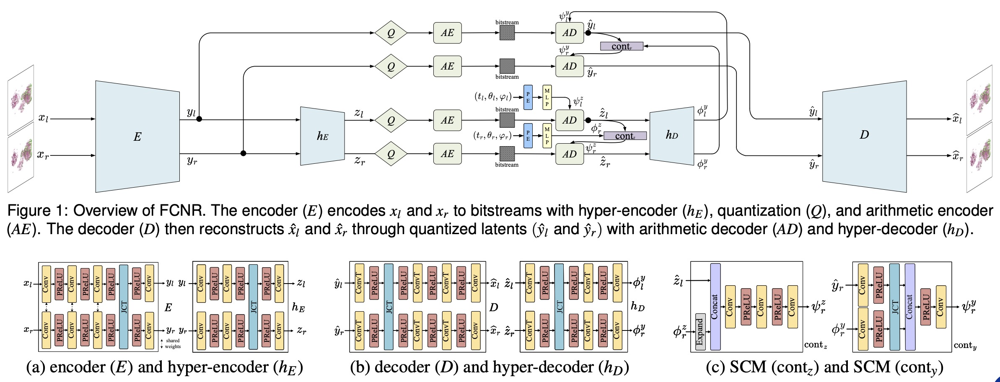

Pengfei Gu 谷鹏飞Assistant Professor
Department of Computer Science |
|


Biography
I am currently an Assistant Professor at the University of Texas Rio Grande Valley in the Computer Science department. I obtained my Ph.D. from the University of Notre Dame, under the supervision of Prof. Danny Z. Chen and Prof. Chaoli Wang. Previously, I received an M.S. in Computer Science and an M.S. in Mathematics from the University of Texas Rio Grande Valley and a bachelor's degree in Mathematics from Tianjin University of Technology and Education.
Research Interests
Deep learning for biomedical image analysis (e.g., image segmentation, classification, and detection)
- Topology-driven image analysis
- Self-supervised learning
- Large foundation models/Large language models in medical imaging
- Multi-modal data analysis
Deep learning for scientific visualization
- Scientific data generation
- Scientific data compression
Openings: I am looking for a new full-sponsered PhD student to join my research team in Spring 2026/Fall 2026. If you are passionate about related research topics, please email me with your CV and a few sentences about your research experience and interests.
News
- [Paper: 01/2026] One paper was accepted by ISBI 2026. Congratulations to Fabian!
- [Grant: 12/2025] Our AHA proposal has been awarded two years of funding support under the American Heart Association Institutional Research Enhancement Award (AIREA) program.
- [Paper: 11/2025] One paper was accepted by WACV 2026.
- [Paper: 10/2025] One paper was accepted by IEEE BIBM 2025.
- [Paper: 09/2025] One paper was accepted by Frontiers in Bioinformatics.
- [Paper: 09/2025] One paper was accepted by ICDM workshop 2025.
- [Grant: 08/2025] Our NSF proposal has been awarded for three years of funding support under the NSF CISE MSI program.
- [Grant: 08/2025] Our USDA cooperative agreement has been awarded for two years of funding support under the USDA-APHIS program.
- [Paper: 07/2025] One paper was accepted by ACM Multimedia 2025.
- [Paper: 04/2025] Two papers were accepted by CBMS 2025. Congratulations to my Master student, Diego!
- [Paper: 04/2025] One paper was accepted by AI In Neuroscience.
- [Paper: 01/2025] Two papers were accepted by ISBI 2025. Congratulations to my PhD student, Jose!
- [Paper: 10/2024] One paper was accepted by SPIE Medical Imaging 2025. Congratulations to my PhD student, Fabian!
- [Paper: 10/2024] One paper was accepted by WACV 2025.
- [08/2024] Joined CS Department at UTRGV as a Tenure-Track Assistant Professor.
- [Paper: 06/2024] One paper was accepted by PRCV 2024.
- [Paper: 06/2024] One paper was accepted by Bioinformatics Advances.
- [Paper: 06/2024] One paper was accepted by MICCAI 2024.
- [Paper: 06/2024] One paper was accepted by IEEE VIS Short Papers 2024.
- [05/07/2024] Defended the PhD dissertation and became a Dr.!
- [Paper: 02/2024] Two papers were accepted by ISBI 2024.
- [Paper: 12/2023] One paper was accepted by Medical Image Analysis.
- [Paper: 08/2023] One paper was accepted by C&G.
- [Paper: 06/2023] One paper was accepted by MICCAI 2023.
- [Paper: 01/2023] Three papers were accepted by ISBI 2023.
- [Paper: 10/2022] One paper was accepted by BIBM 2022.
Selected Publications [Google Scholar]

|
Learning with Geometric Priors in U-Net Variants for Polyp Segmentation. Fabian Vazquez, Jose Nunez, Diego Adame, Alissen Moreno, Augustin Zhan, Huimin Li, Haoteng Tang, Bin Fu and Pengfei Gu. In Proceedings of IEEE International Symposium on Biomedical Imaging (ISBI), 2026. [paper] |

|
Integrating Multi-scale and Multi-filtration Topological Features for Medical Image Classification. Pengfei Gu*, Huimin Li*, Haoteng Tang, Dongkuan Xu, Erik Enriquez, Dongchul Kim, Bin Fu, and Danny Z. Chen. (* means equal contribution) In Proceedings of IEEE/CVF Winter Conference on Applications of Computer Vision(WACV), 2026. [paper] |

|
Self Pre-training with Topology- and Spatiality-aware Masked Autoencoders for 3D Medical Image Segmentation. Pengfei Gu*, Huimin Li*, Yejia Zhang, Chaoli Wang, and Danny Z. Chen. In Proceedings of IEEE International Conference on Bioinformatics and Biomedicine (BIBM), 2025. [paper] |
| TopoImages: Incorporating Local Topology Encoding into Deep Learning Models for Medical Image Classification. Pengfei Gu, Hongxiao Wang, Yejia Zhang, Huimin Li, Chaoli Wang, and Danny Z. Chen. In Proceedings of the 33rd ACM International Conference on Multimedia (ACM MM), 2025. [paper] |
|
| Topo-VM-UNetV2: Encoding Topology into Vision Mamba UNet for Polyp Segmentation. Diego Adame, Jose Nunez, Fabian Vazquez, Nayeli Gurrola, Huimin Li, Haoteng Tang, Bin Fu and Pengfei Gu. In Proceedings of the 38th IEEE International Symposium on Computer-Based Medical Systems (CBMS), 2025. [paper] |
|
| Adapting a Segmentation Foundation Model for Medical Image Classification. Pengfei Gu, Haoteng Tang, Islam A. Ebeid, Jose A. Nunez, Fabian Vazquez, Diego Adame, Marcus Zhan, Huimin Li, Bin Fu and Danny Z. Chen. In Proceedings of the 38th IEEE International Symposium on Computer-Based Medical Systems (CBMS), 2025. [paper] |
|
| Sli2Vol+: Segmenting 3D Medical Images Based on an Object Estimation Guided Correspondence Flow Network. Delin An*, Pengfei Gu*, Milan Sonka, Chaoli Wang, and Danny Z. Chen. (* means equal contribution) In Proceedings of IEEE/CVF Winter Conference on Applications of Computer Vision(WACV), 2025. |
|
|  | FCNR: Fast Compressive Neural Representation of Visualization Images. Yunfei Lu, Pengfei Gu, and Chaoli Wang. In Proceedings of IEEE VIS Short Papers, 2024. |
| IHCSurv: Effective Immunohistochemistry Priors for Cancer Survival Analysis in Gigapixel Multi-stain Whole Slide Images. Yejia Zhang, Hanqing Chao, Zhongwei Qiu, Wenbin Liu, Yixuan Shen, Nischal Sapkota, Pengfei Gu, Danny Z. Chen, Yun Bian, Hui Jiang, Le Lu, Ke Yan, and Dakai Jin. In Proceedings of International Conference on Medical Image Computing and Computer Assisted Interventions (MICCAI), 2024. |
|
| Boosting Medical Image Classification with Segmentation Foundation Model. Pengfei Gu, Zihan Zhao, Hongxiao Wang, Yaopeng Peng, Yizhe Zhang, Nishchal Sapkota, Chaoli Wang, and Danny Z. Chen. In Proceedings of IEEE International Symposium on Biomedical Imaging (ISBI), 2024. [Oral Presentation] [paper] |
|
| NeRVI: Compressive Neural Representation of Visualization Images for Communicating Volume Visualization Results. Pengfei Gu, Danny Z. Chen, and Chaoli Wang. Computers & Graphics (C&G), 2023. |
|
| SwIPE: Efficient and Robust Medical Image Segmentation with Implicit Patch Embeddings. Yejia Zhang, Pengfei Gu, Nishchal Sapkota, and Danny Z. Chen. In Proceedings of International Conference on Medical Image Computing and Computer Assisted Interventions (MICCAI), 2023. |
|
| A Point in the Right Direction: Vector Prediction for Spatially-aware Self-supervised Volumetric Representation Learning. Yejia Zhang*, Pengfei Gu*, Nishchal Sapkota, Hao Zheng, Peixian Liang, and Danny Z. Chen. (* means equal contribution) In Proceedings of IEEE International Symposium on Biomedical Imaging (ISBI), 2023. [Oral Presentation] [paper] |
|

|
ConvFormer: Combining CNN and Transformer for Medical Image Segmentation. Pengfei Gu*, Yejia Zhang*, Chaoli Wang, and Danny Z. Chen. (* means equal contribution) In Proceedings of IEEE International Symposium on Biomedical Imaging (ISBI), 2023. [Oral Presentation] [paper] |

|
GrNT: Gate-regularized network training for improving multi-scale fusion in medical image segmentation. Yizhe Zhang*, Pengfei Gu*, Yejia Zhang, Chaoli Wang, and Danny Z. Chen. (* means equal contribution) In Proceedings of IEEE International Symposium on Biomedical Imaging (ISBI), 2023. [Oral Presentation] [paper] |

|
Keep Your Friends Close & Enemies Farther: Debiasing Contrastive Learning with Spatial Priors in 3D Radiology Images. Yejia Zhang, Nishchal Sapkota, Pengfei Gu, Yaopeng Peng, Hao Zheng, and Danny Z. Chen. In Proceedings of IEEE International Conference on Bioinformatics and Biomedicine (BIBM), 2022. [paper] |

|
Scalar2Vec: Translating Scalar Fields to Vector Fields via Deep Learning. Pengfei Gu, Jun Han, Danny Z. Chen, and Chaoli Wang. In Proceedings of IEEE Pacific Visualization Symposium (IEEE PacificVis), 2022. |

|
kCBAC-Net: Deeply Supervised Complete Bipartite Networks with Asymmetric Convolutions for Medical Image Segmentation. Pengfei Gu, Hao Zheng, Yizhe Zhang, Chaoli Wang, and Danny Z. Chen. In Proceedings of International Conference on Medical Image Computing and Computer Assisted Interventions (MICCAI), 2021. [paper] |

|
Reconstructing Unsteady Flow Data from Representative Streamlines via Diffusion and Deep Learning Based Denoising. Pengfei Gu, Jun Han, Danny Z. Chen, and Chaoli Wang. IEEE Computer Graphics and Applications (IEEE CG&A), 2021. [IEEE CG&A 2021 Best Paper Award] |

|
Approximate set union via approximate randomization. Bin Fu, Pengfei Gu *, and Yuming Zhao. (* means corresponding author) Theoretical Computer Science (TCS), 2021. [paper] |
Teaching
| Fall 2025 | CSCI-8370-01: ST: DL Algorithms for Medical Imaging |
| Fall 2025 | CSCI-3310-02: Mathmatical Foundation of CS |
| Spring 2025 | CSCI-4341-01: ST: DL Algorithms for Medical Imaging |
| Spring 2025 | CSCI-3310-04: Mathmatical Foundation of CS |
| Fall 2024 | CSCI-3310-02: Mathmatical Foundation of CS |
Group
PhD Students
- Jose A. Nunez (Fall 2024 - Now, co-advised with Dr. Bin Fu)
- Fabian Vazquez (Fall 2024 - Now)
- Abdul Basit Mohammed (Spring 2026 - Now, co-advised with Dr. Haoteng Tang)
Master Students
- Diego Adame
Grants
© Pengfei Gu | Last updated: Jan. 2026